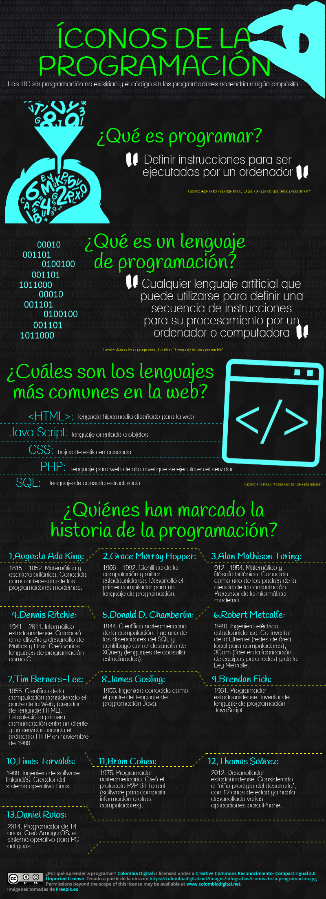
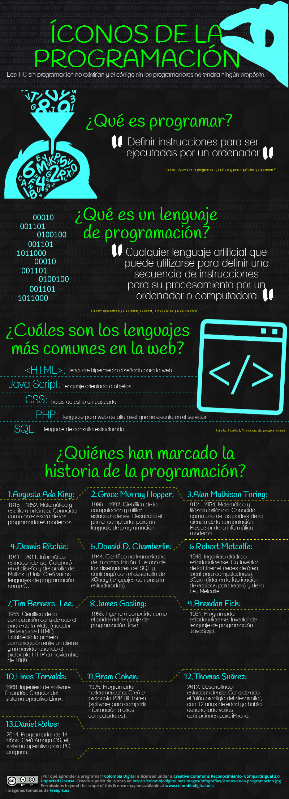

Hola Makers! ahora vamos a poner en práctica lo que has aprendido
Como ya hiciste fork a mi repositorio, sigue las siguientes intrucciones:
 

- Haz commit
- Crea un Archivo style.css (en su respectiva carpeta css) y pon un background-color de tu preferencia
- Haz Commit
- Crea una rama que se llame mis-datos
- Agrega tus datos a esta branch (nombre, apellido, quién te inspira)
- Haz commit
- Colocá la imagen de esa persona
- Haz commit
- Luego une tus cambios de esta rama a la rama master
- Borra la rama mis-datos cuando estes seguro que master tiene todo tu trabajo (sino sabes como hacerlo busca en San Google)
- Súbelo a tu repositorio
HAPPY CODING!